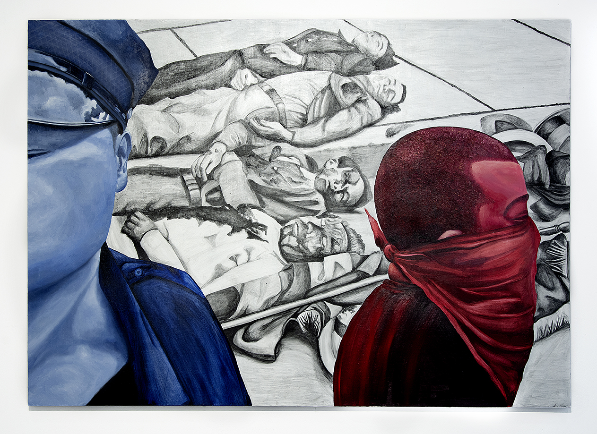
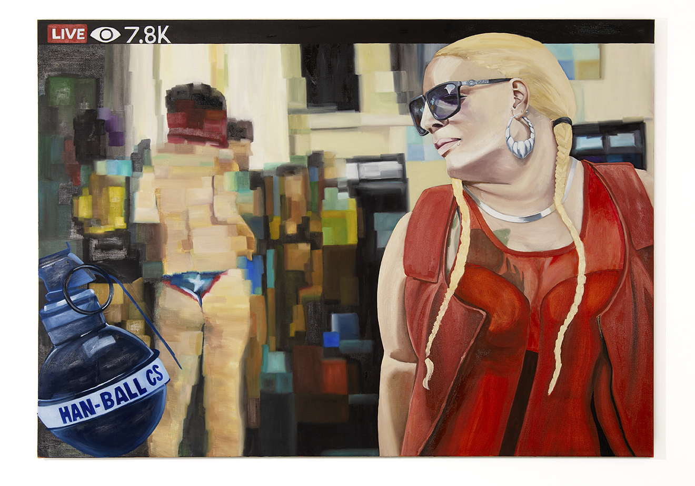
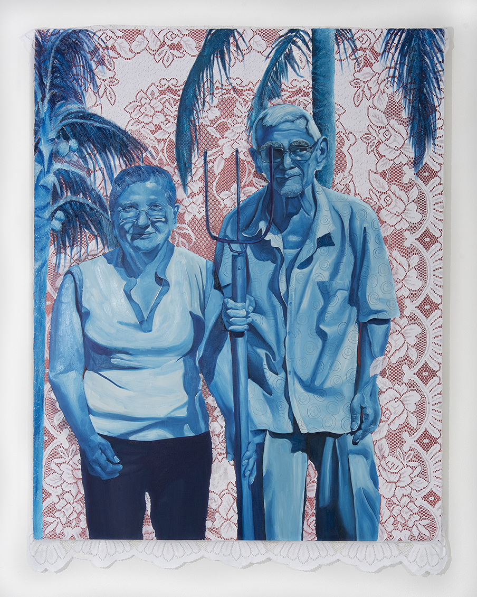
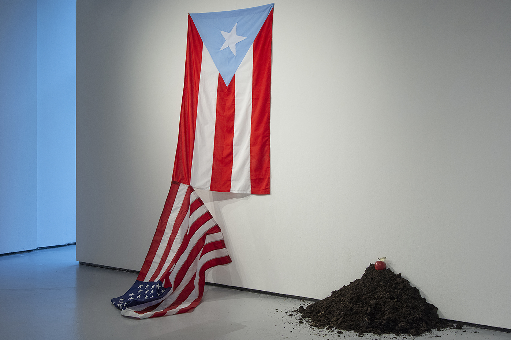

Danielle De Jesus, Google The Ponce Massacre 2021, oil and graphite on linen, 60 × 84″">
Danielle De Jesus, Google Perreo Combativo, 2021, oil on linen, 20 × 84″">
Danielle De Jesus, Google Yo no me quito 2021, oil, acrylic, and table cloth on wood panel, 48 × 60″">
Danielle De Jesus, Google Displacement 2021, U.S soil, apple, U.S currency, Puerto Rican flag, American flag, variable dimensions">
Danielle De Jesus (b. 1987, Brooklyn, New York) is an artist who works in painting and photography to tell the story of her community in both Bushwick, Brooklyn and Puerto Rico. By combining imagery of historical moments in Puerto Rico with that of the Puerto Rican diaspora, De Jesus bridges the gap that has kept the two communities apart. Much of Puerto Rico’s history as a colony of the United States has not been taught to Puerto Ricans in the diaspora or the archipelago and De Jesus aims to stimulate conversation around many of these critical topics that effect Puerto Ricans around the globe.